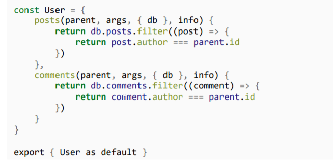

As seen earlier, in order to setup a relationship b/w type we had to make seperate resolver fuctions and place the relationship methods within it. Where we would match the parent.id with the array. Like this...

Now since we have access to our original db, therefore we do not have to write custom resolver fucntions to setup relatioships as all this is already handled by prisma. So, we remove everything from the User resolver functions (as it overwrites the behaviour of prisma)